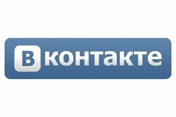
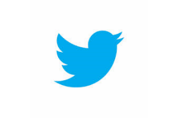
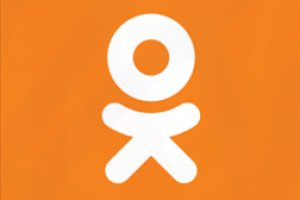
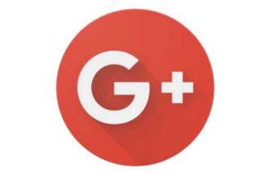
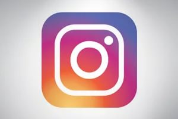

Вконтакте
крупнейшая социальная сеть в Европе со штаб-квартирой в Санкт-Петербурге. Сайт доступен на многих языках, особенно популярен среди русскоязычных пользователей. «ВКонтакте» позволяет пользователям отправлять друг другу сообщения, создавать группы, публичные страницы и события, обмениваться изображениями, аудио, видео, тегами, а также играть в браузерные игры.
Запущенный 10 октября 2006 года, ресурс изначально позиционировал себя в качестве социальной сети студентов и выпускников российских вузов, позднее стал называть себя «современным, быстрым и эстетичным способом общения в сети». По данным на январь 2017, среднесуточная аудитория составляет 87 714 854 посетителей, зарегистрировано более 410 миллионов пользователей. По данным SimilarWeb, «ВКонтакте» является 4 самым популярным сайтом в мире.
Офисы расположены в Санкт-Петербурге, Москве и Киеве. В феврале 2017 главным исполнительным директором (CEO) «ВКонтакте» стал Андрей Рогозов.

Facebook
крупнейшая социальная сеть в мире и одноименная компания (Facebook Inc), владеющая ею. Была основана 4 февраля 2004 года Марком Цукербергом и его соседями по комнате во время обучения в Гарвардском университете — Эдуардо Саверином, Дастином Московицем и Крисом Хьюзом.
Первоначально веб-сайт был назван Thefacebook и был доступен только для студентов Гарвардского университета, затем регистрацию открыли для других университетов Бостона, а затем и для студентов любых учебных учреждений США, имеющих электронный адрес в домене .edu. Начиная с сентября 2006 года сайт доступен для всех пользователей Интернета в возрасте от 16 лет, имеющих адрес электронной почты.
Facebook входит в пятерку наиболее посещаемых веб-сайтов мира. На июль 2016 года аудитория Facebook составила 1,71 миллиарда пользователей — это те, кто заходил на сайт хотя бы раз в месяц или за указанный промежуток времени был зафиксирован с помощью кнопки Like и следящих cookie. Суточная активная аудитория в марте составила 720 миллионов человек — столько фиксируется следящей сетью Facebook ежедневно. 24 августа 2015 года число посетителей социальной сети Facebook впервые составило один миллиард человек. 1,03 млрд человек в месяц используют мобильное приложение Facebook. Каждый день в социальной сети пользователи оставляют 6 миллиардов «лайков» и комментариев и публикуют 300 миллионов фотографий. На сайте зафиксировано 200 миллиардов «дружеских связей». Количество просмотров страниц сайта в октябре 2011 года составило 1 триллион, количество просмотров видео на сайте достигло в 2015 году отметки в 8 миллиардов в день.
Компания Facebook Inc является владельцем других популярных сервисов, таких, как Instagram, WhatsApp.
Facebook написан на C++, PHP (HHVM).
Благодаря этому сайту Марк Цукерберг в 23 года стал самым молодым миллиардером планеты
Twitter
социальная сеть для публичного обмена сообщениями при помощи веб-интерфейса, SMS, средств мгновенного обмена сообщениями или сторонних программ-клиентов для пользователей интернета любого возраста. Публикация коротких заметок в формате блога получила название «микроблогинг». Пользование сервисом бесплатно. Пользование посредством SMS тарифицируется оператором согласно тарифному плану пользователя.
Владельцем системы «Твиттер» является компания Twitter Inc., главный офис которой находится в Сан-Франциско (штат Калифорния). Twitter Inc. также имеет серверы и офисы в Сан-Антонио (штат Техас) и Бостоне (штат Массачусетс). По состоянию на июнь 2015 года в американских офисах компании работает около 3000 сотрудников.
Созданный Джеком Дорси в 2006 году, «Твиттер» вскоре завоевал популярность во всём мире. По состоянию на 1 января 2011 года сервис насчитывает более 200 млн пользователей. 100 млн пользователей проявляют активность хотя бы раз в месяц, из них 50 миллионов пользуются «Твиттером» ежедневно. 55 % пользуются «Твиттером» на мобильных гаджетах, около 400 миллионов уникальных посещений получает за месяц непосредственно сайт twitter.com.
В 2014 году выручка компании Twitter Inc. составила 1,4 млрд долларов

Одноклассники
социальная сеть, принадлежащая Mail.Ru Group. Второй по популярности сайт в Армении, четвертый в Азербайджане, и пятый в России, 49-й — в мире. Проект запущен 4 марта 2006 года.
По данным собственной статистики сайта, на июль 2011 года зарегистрировано более 100 миллионов пользователей, на март 2012 года более 156 миллионов пользователей, а на 1 января 2013 года более 205 млн пользователей. Посещаемость сайта — более 70 миллионов посетителей в сутки (на март 2015)

Google+
социальная сеть от компании Google. Сервис предоставляет возможность общения через Интернет с помощью специальных компонентов: Круги, Темы, ВидеоВстречи, Мобильная версия. Компания Google при анонсировании сети заявила, что основополагающими принципами действия сервиса являются: пользователи, приватность и живое общение. Информация, которой делятся участники сети, влияет на персонализированные результаты поиска Google

Instagram
бесплатное приложение для обмена фотографиями и видеозаписями с элементами социальной сети, позволяющее снимать фотографии и видео, применять к ним фильтры, а также распространять их через свой сервис и ряд других социальных сетей. Instagram позволял делать фотографии квадратной формы — как камеры моментальной фотографии Polaroid, Kodak Instamatic и среднеформатные камеры 6×6 (большинство же мобильных фотоприложений использует соотношение сторон 3:2), но с 26 августа 2015 года Instagram ввела возможность добавлять фото и видео с ландшафтной и портретной ориентацией, без обрезания до квадратной формы.
Приложение совместимо с устройствами iPhone, iPad и iPod Touch на iOS 4.3 и выше, а также с телефонами на Android 2.2 и выше с поддержкой OpenGL ES 2. Распространяется оно через App Store и Google Play соответственно. 21 ноября 2013 года появился Instagram Beta для Windows Phone 8.
В апреле 2012 года Instagram был приобретён компанией Facebook. Цена покупки составила 300 млн долларов денежными средствами и 23 млн акций компании, что в общей сложности составило $1 млрд
